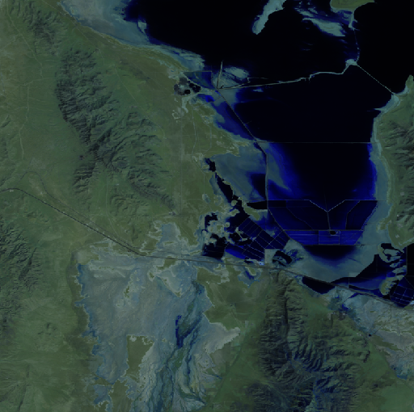
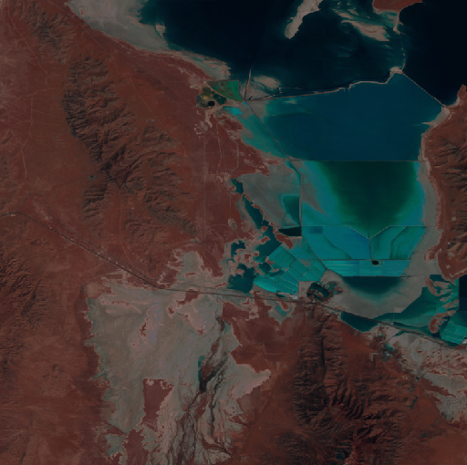

🧮 Controlling the RGB Bands#
The ipyleaflet and folium tile layer utilities support setting which bands
to view as the RGB channels. To set the RGB bands, pass a length three list
of the band indices to the band argument.
Here is an example where I create two tile layers from the same raster but viewing a different set of bands:
from localtileserver import get_leaflet_tile_layer, examples
from ipyleaflet import Map, ScaleControl, FullScreenControl, SplitMapControl
# First, create TileClient using example file
client = examples.get_landsat()
client.thumbnail(band=[7, 5, 4])

client.thumbnail(band=[5, 3, 2])

# Create 2 tile layers from same raster viewing different bands
l = get_leaflet_tile_layer(client, band=[7, 5, 4])
r = get_leaflet_tile_layer(client, band=[5, 3, 2])
# Make the ipyleaflet map
m = Map(center=client.center(), zoom=client.default_zoom)
control = SplitMapControl(left_layer=l, right_layer=r)
m.add_control(control)
m.add_control(ScaleControl(position='bottomleft'))
m.add_control(FullScreenControl())
m
Additionally, localtileserver supports a full styling specification
from large-image for more complex composite images.
See https://girder.github.io/large_image/tilesource_options.html#style
from localtileserver import get_leaflet_tile_layer, examples
from ipyleaflet import Map
client = examples.get_landsat()
style = {
'bands': [
{'band': 5, 'palette': '#f00'},
{'band': 3, 'palette': '#0f0'},
{'band': 2, 'palette': '#00f'},
]
}
client.thumbnail(style=style)
l = get_leaflet_tile_layer(client, style=style)
m = Map(center=client.center(), zoom=client.default_zoom)
m.add_layer(l)
m